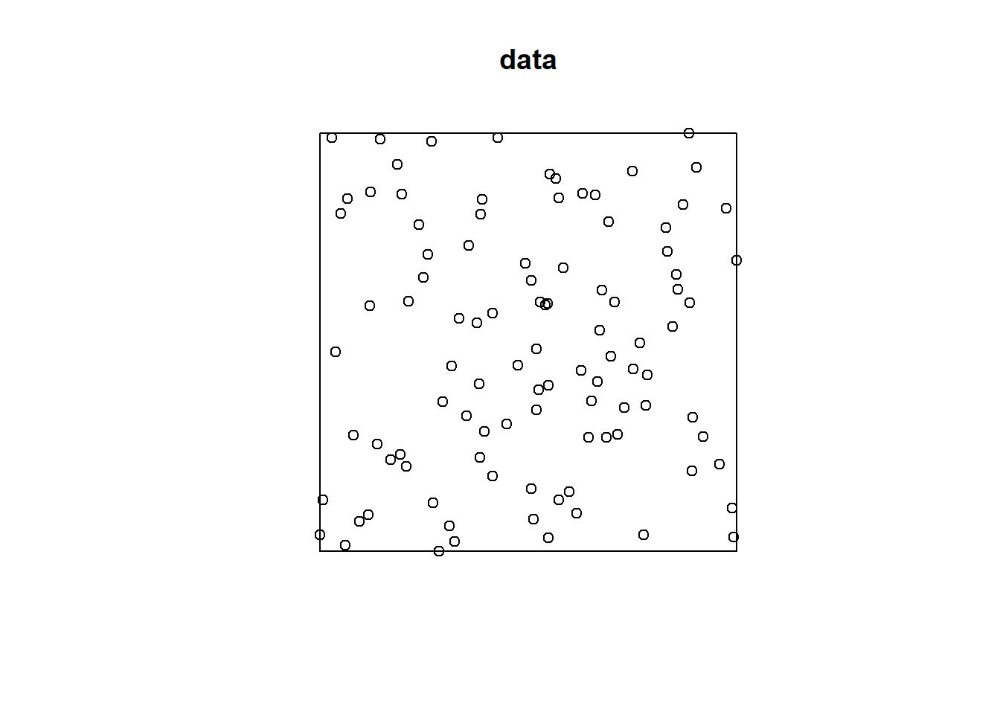
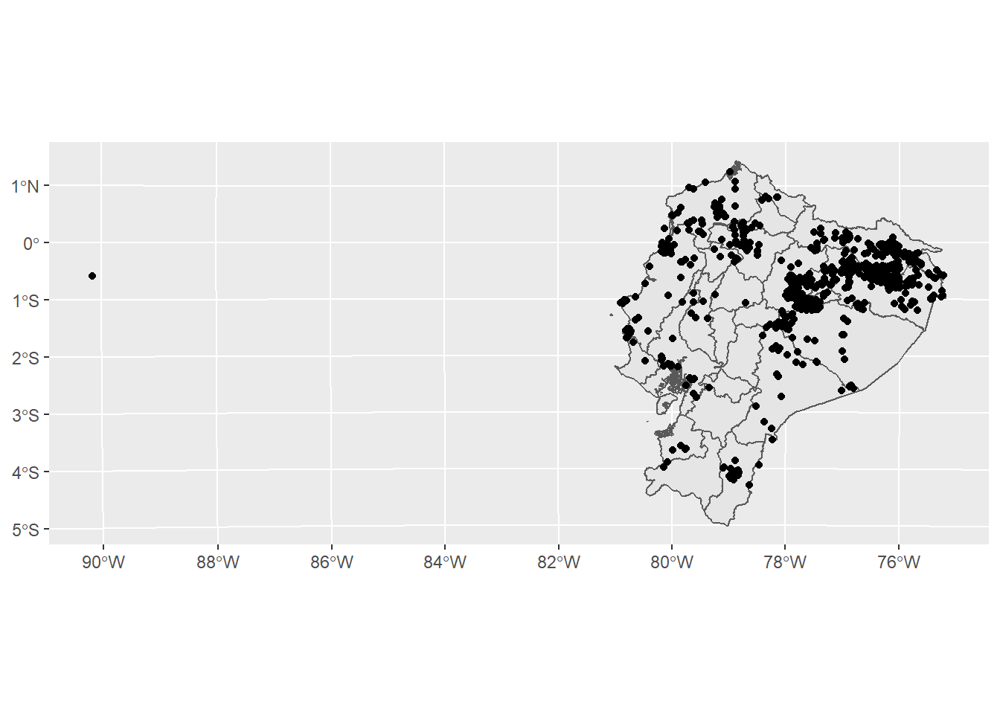
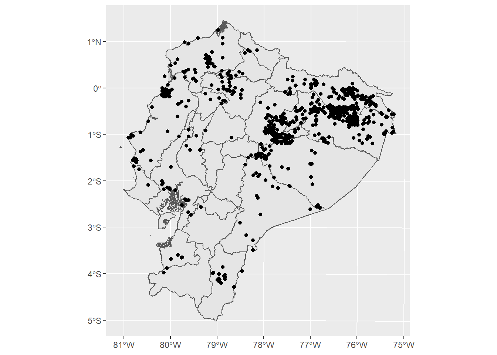
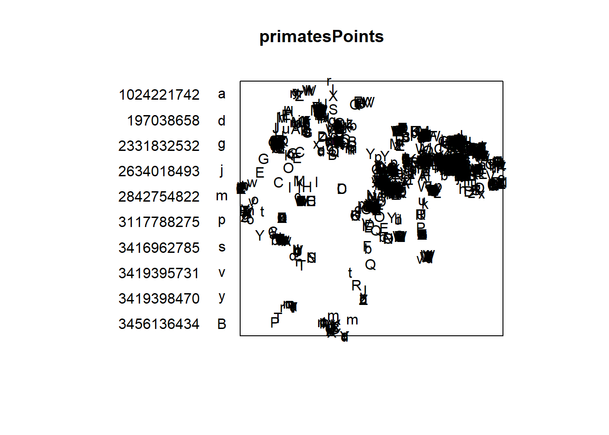
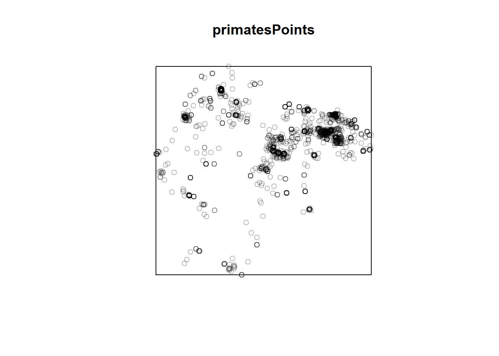
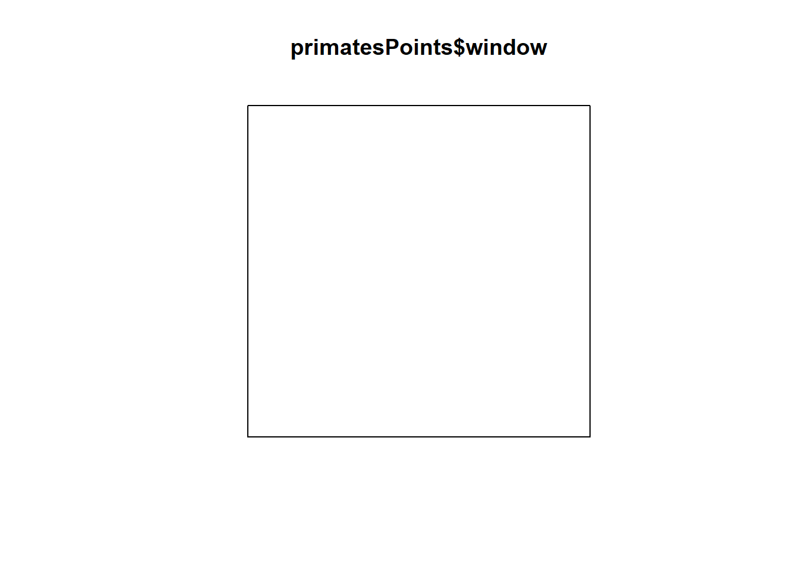
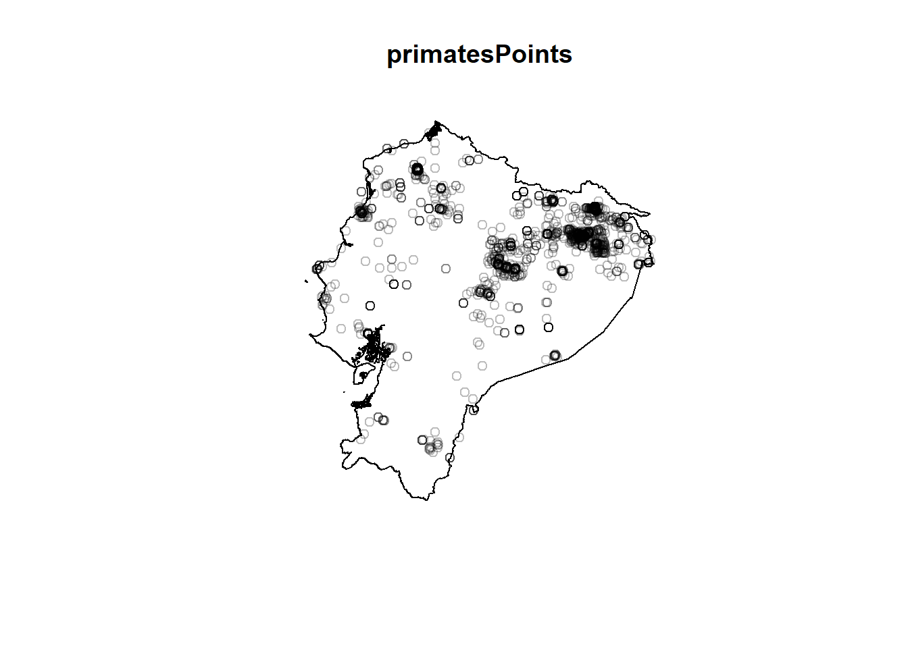

Part 2 Working with point data in spatstat
There are two principal objects required for analyzing point data in spatstat:
- a set of points expressed as coordinates in 2D space (a
pppobject) - a window of observation delineating where (an
owinobject)
Points can come from a number of sources. Here, we’ll create some data and convert them into a ppp object.
x<-runif(100,0,1)
y<-runif(100,0,1)
xy<-data.frame(x,y)
w<-owin(c(min(x),max(x)),c(min(y),max(y)))
data<-as.ppp(xy,w)plot(data)
## Converting sf data to owin and ppp
An important thing to keep in mind about point data analysis in spatstat is that it is concerned with distance relationships in two-dimensions. This means that any data that is not in a flat-plane coordinate space will not work. So for us to use spatstat, our data must either exist in a non-geographic space (as in our random points above), or must be in a projected coordinate space.
Here, we’ll load in
ecuador<-read_sf("ecuador.shp")
ecuador<-st_transform(ecuador,32717)
ecWin<- as.owin(ecuador)
ecWin## window: polygonal boundary
## enclosing rectangle: [490690.4, 1147851.6] x [9445216, 10160820] unitsWhen making point data
primates<-read_sf("SAPrimateObservations.csv")
primates<-subset(primates,countryCode=="EC")
primates<-st_as_sf(primates,coords=c("decimalLongitude","decimalLatitude"))
st_crs(primates)<-4326
primates<-st_transform(primates,32717)OK, let’s make sure that’s in good shape:
g1<-ggplot() +
geom_sf(data=ecuador) +
geom_sf(data=primates)
print(g1) Oops! Apparently someone observed primates out in the Galapagos! We’ll want to trim those points out before we convert.
primates<-st_crop(primates,ecuador)## Warning: attribute variables are assumed to be spatially constant throughout all
## geometriesg1<-ggplot() +
geom_sf(data=ecuador) +
geom_sf(data=primates)
print(g1)
That’s better. OK, to turn this sf into a ppp object, we’ll use as.ppp.
primatesPoints<-as.ppp(primates)## Warning in as.ppp.sf(primates): only first attribute column is used for marksNote that warning. “Marks” is point pattern analysis slang for attributes. Our primates data has quite a few of them. Traditionally, spatstat only allowed for a single column of marks, so when it converts other data to ppp it only keeps the first column.
Let’s take a look at that pattern now.
plot(primatesPoints)## Warning in default.charmap(ntypes, chars): Too many types to display every type
## as a different character
Yikes, what a mess. Here, spatstat is trying to plot all of the marks that came over with this data. This isn’t really something we want to deal with at the moment, so we can get rid of them with unmark.
primatesPoints<-unmark(primatesPoints)plot(primatesPoints)
Much better!
2.1 What is a owin object? What is a ppp object?
These objects are not something we’ve encountered before, so it’s worth looking at their structure a bit. The owin carries a few pieces of information that relate to its geometry, such as whether it is a rectangle or polygon, its extent, and the vertices that form its boundary.
ecWin$type## [1] "polygonal"primatesPoints$n## [1] 2637head(primatesPoints$x)## [1] 1005545.2 943889.4 643055.4 643072.1 1005801.4 1005801.4If a ppp object has marks, these would be stored as a vector or, in the case of more than one set of marks, a dataframe.
Finally, it also carries its own window object:
plot(primatesPoints$window)
Of course, here it is just the rectangular extent of the points. But much of the space this rectangle occupies would not really be considered the area of interest. This is what we need the ecWin object for: so we can assign a custom window to the point pattern.
primatesPoints$window<-ecWin
plot(primatesPoints)